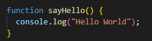
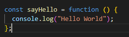
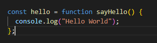
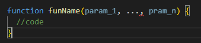
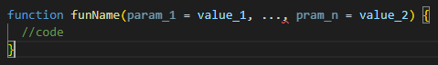
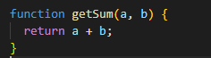
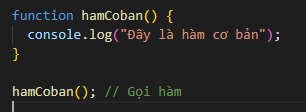
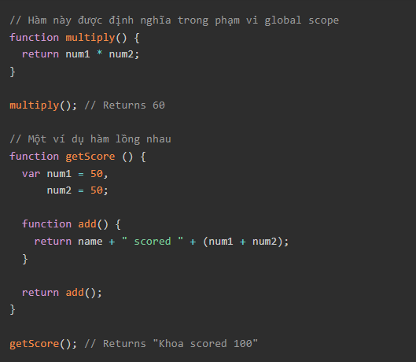

Function (hàm, chức năng), gọi chung là subprogram (chương trình con) có thể được gọi ở bên ngoài hoặc bên trong chính nó. Function bao gồm tập hợp các câu lệnh gọi là function body. Các giá trị có thể truyền đến một hàm, và một hàm có thể trả về giá trị.
Để khai báo hàm, chúng ta dùng từ khóa function, theo sau nó là:
Ví dụ cụ thể như bên dưới
Khác với cách khai báo hàm ở trên, ta cũng có thể tạo ra hàm bằng một biểu thức hàm (function expression). Một hàm như vậy có thể nặc danh; nó không cần phải có tên. Ví dụ, hàm sayHello ở trên có thể được khai báo như sau:
Tuy ta không cần khai báo tên hàm trong cách này nhưng vẫn nên đặt tên cho hàm. Việc này cho phép hàm có thể chạy chính nó, hoặc có thể sử dụng hệ thống debug để nhận dạng hàm trong stack traces. Ví dụ:
Tên hàm cần đáp ứng được những yêu cầu sau:
Đây là dạng hàm cơ bản nhất trong Javascript, cú pháp có dạng như ví dụ trên. Trong đó:
Đây là một dạng hàm rất hay được sử dụng, cú pháp về cơ bản cũng giống với loại hàm cơ bản, tuy nhiên có thêm tham số truyền vào. Ví dụ như sau:
Trong đó:
Cũng giống với loại hàm có tham số truyền vào nhưng tham số đã được đặt mặc định.
Trong javascript có hai loại hàm,đó là hàm có giá trị trả về và hàm không có giá trị trả về.
Ví dụ:
Trong JavaScript, để hàm (function) được thực thi, ta cần gọi hàm. Ví dụ như sau:
Trong ví dụ trên, đơn giản, ta chỉ cần gọi tên hàm kèm cặp ngoặc (). Khi đó các câu lệnh ta đã tạo ra trong hàm sẽ được thực thi. Ở đây là in ra màn hình dòng chữ "Đây là hàm cơ bản"
Các biến được định nghĩa bên trong một hàm không thể được truy cập từ nơi nào khác bên ngoài hàm, bởi vì biến đó được định nghĩa chỉ trong phạm vi của hàm. Tuy nhiên, một hàm có thể truy cập đến mọi biến và mọi hàm khác trong cùng phạm vi mà nó được định nghĩa.
Nói cách khác, một hàm được định nghĩa trong phạm vi global có thể truy cập tới tất cả các biến đã được định nghĩa trong phạm vi global. Một hàm được định nghĩa bên trong một hàm khác có thể truy cập đến tất cả biến được định nghĩa bên trong hàm cha của nó, và bất cứ biến nào khác mà hàm cha của nó có quyền truy cập đến. Các bạn có thể tham khảo ví dụ dưới đây:
Trong JavaScript, các tham số của function được mặc định là undefined. Tuy nhiên, trong một số trường hợp nó có thể hữu ích để thiết lập một giá trị mặc định khác. Đây chính xác là điều mà default parameters sẽ làm.